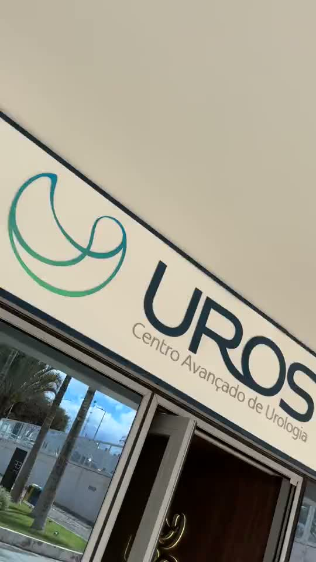
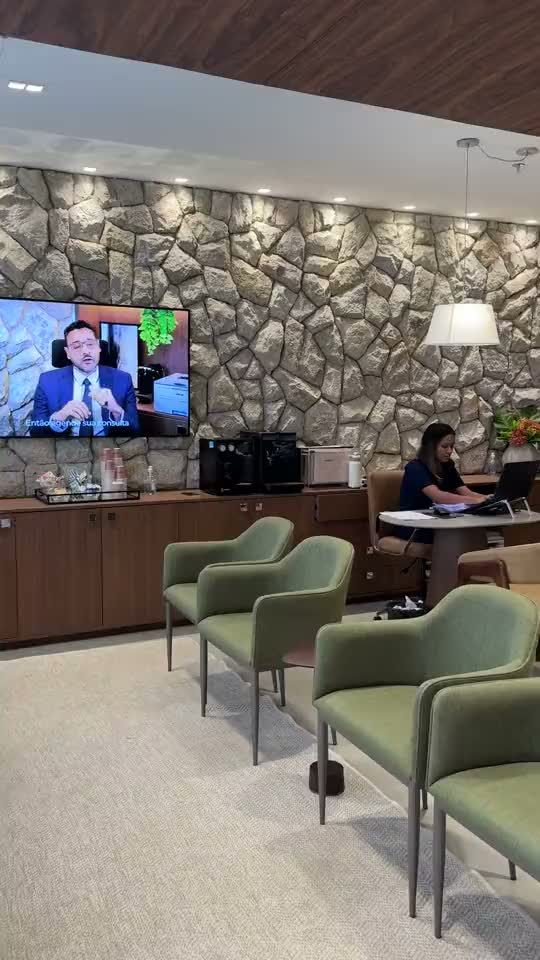

Medo do diagnóstico de câncer de próstata?
A incerteza sobre a saúde da próstata pode gerar ansiedade e impactar sua rotina.
Dr. Ricardo Ferro: 20 anos de Urologia, com domínio em Cirurgia Robótica e Laser HoLEP — tecnologia e cuidado que transformam vidas.
Dr. Ricardo Ferro
Urologista • Cirurgião Robótico
0+
Cirurgias Robóticas
0+
Cirurgias Robóticas
Com 27 anos na medicina e duas décadas dedicadas à Urologia, o Dr. Ricardo Ferro combina vasta experiência com inovação constante. Graduado pela UFAL, com Mestrado e Doutorado pela UFMG, é referência em tratamentos urológicos complexos. Desde 2019, é certificado em Cirurgia Robótica e atua como instrutor Proctor, somando mais de 800 procedimentos realizados.
CRMDF 16924
27 anos de experiência médica
20 anos como Urologista
Graduação UFAL
Mestrado e Doutorado UFMG
Certificado em Cirurgia Robótica
Instrutor Proctor em Cirurgia Robótica
Em poucos minutos, o especialista explica sua abordagem, as técnicas que domina e o que esperar do atendimento.
Problemas urológicos afetam qualidade de vida e bem-estar. Você se identifica?
A incerteza sobre a saúde da próstata pode gerar ansiedade e impactar sua rotina.
Dificuldade para urinar, jato fraco, acordar várias vezes à noite.
Soluções modernas com recuperação rápida e resultados duradouros.
É natural buscar um especialista com a tecnologia mais avançada.
Você merece técnica de excelência aliada à empatia.
Você não precisa conviver com isso. Existe uma solução moderna, segura e personalizada para o seu caso.
O ápice da precisão em prostatectomias, nefrectomias e cistectomias. Visão tridimensional ampliada e movimentos milimétricos para minimizar riscos e otimizar a recuperação.
Saiba mais pelo WhatsAppA técnica mais moderna e eficaz para próstata aumentada. Laser de alta potência remove com precisão o tecido obstrutivo, restaurando o fluxo urinário de forma definitiva.
Saiba mais pelo WhatsAppEntre em contato via WhatsApp. Nossa equipe agenda no melhor horário para você.
Avaliação minuciosa, escuta atenta e exames quando necessário para um diagnóstico preciso.
Tratamento individualizado, com todas as opções, benefícios e expectativas claras.
Suporte constante em todas as etapas, garantindo recuperação e bem-estar.
Entre em contato via WhatsApp. Nossa equipe agenda no melhor horário para você.
Avaliação minuciosa, escuta atenta e exames quando necessário para um diagnóstico preciso.
Tratamento individualizado, com todas as opções, benefícios e expectativas claras.
Suporte constante em todas as etapas, garantindo recuperação e bem-estar.
Condutas baseadas nas mais recentes evidências científicas mundiais, garantindo tratamentos de vanguarda.
Mais de 800 cirurgias robóticas realizadas e atuação como instrutor, sinônimo de segurança e excelência.
Compromisso com a obtenção dos melhores desfechos para cada paciente, com foco na sua recuperação e bem-estar.
Excelência na relação médico-paciente, com escuta ativa, clareza nas explicações e cuidado individualizado.
Utilização das técnicas mais avançadas, como Cirurgia Robótica e Laser HoLEP, para tratamentos eficazes e minimamente invasivos.
Convidado recorrente para entrevistas e podcasts em veículos de referência como Rede Globo, TV Senado, Correio Braziliense, Terra, Folha e Marie Claire.
Ver publicaçõesAlém da prática cirúrgica, o Dr. Ricardo Ferro contribui com a literatura médica em cirurgia robótica, uro-oncologia e andrologia.
Open Journal of Surgery — ISSN 2639-3611
Journal of Medical Systems · v. 6, p. 1–7
European Journal of Medical and Health Sciences · v. 4, p. 22–23
Current Research in Diabetes & Obesity Journal · v. 4
Revista Médica de Minas Gerais
Capítulo em Clínica Médica, 2ª ed. · Editora Atheneu, Rio de Janeiro
Capítulo em Tópicos em Gastroenterologia 12 · Editora MEDSI, Rio de Janeiro · p. 141–165
Currículo completo, com a produção acadêmica integral, disponível na Plataforma Lattes do CNPq.
5,0 — 4 avaliações verificadas
Leandro Cardoso
Consulta verificadaO melhor atendimento que já tive. Começando pela recepção dos colaboradores. Atendimento humano.
Alessandro
Consulta verificadaO Dr Ricardo Ferro é um excelente médico, diferenciado no que faz, além da simpatia e preocupação com o bem estar do paciente, é bem criterioso e atento a sua história clínica, explicando com detalhes e muita clareza cada exame e sintomas, o que nos traz alívio e confiança. Realmente, um especialista de excelência, que vai além do conhecimento e experiência, se importa com o ser humano. Parabéns, e que Deus continue abençoando sua vida!
Wagner de Siqueira Pinto
Consulta verificadaExcelente atendimento do Dr. Ricardo e sua competente equipe.
G.
Consulta verificadaDemonstrou muito conhecimento e deu amplas explicações.
Experiência, tecnologia e cuidado humanizado que você merece. Agende sua consulta e redescubra o bem-estar.
Quero Agendar Minha ConsultaUm ambiente pensado para o seu conforto e privacidade, com equipamentos de última geração.


Homens a partir dos 45-50 anos (ou mais cedo, se houver histórico familiar) devem realizar exames de rotina. Além disso, qualquer sintoma urinário persistente (dor, dificuldade, sangue na urina) ou disfunção sexual justifica uma consulta.
Sim, a cirurgia robótica é considerada extremamente segura, com menor risco de complicações, menor perda de sangue e recuperação mais rápida em comparação com cirurgias abertas tradicionais. A precisão do robô é um grande diferencial.
O Laser HoLEP é um tratamento minimamente invasivo para a Hiperplasia Prostática Benigna (HPB), ou próstata aumentada. É indicado para homens com sintomas urinários moderados a graves causados pelo crescimento benigno da próstata, que buscam uma solução definitiva.
Para informações sobre convênios e planos de saúde aceitos, por favor, entre em contato diretamente pelo nosso WhatsApp. Nossa equipe pode verificar a cobertura e te orientar da melhor forma.
É muito simples! Basta clicar no botão de WhatsApp nesta página ou ligar para o número indicado. Nossa equipe estará pronta para atendê-lo e encontrar o melhor horário para sua consulta.
Artigos sobre próstata, cirurgia robótica, Laser HoLEP e saúde do homem — escritos pelo próprio Dr. Ricardo Ferro, em linguagem que você entende.